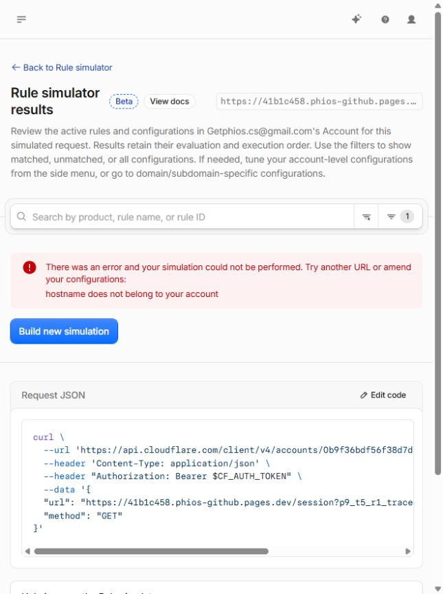

PASS_SINGLE_CANARY_INGRESS_CONTAINMENT — branch B: architecturally proven by bounded runtime causal attribution and documented terminating pre-origin semantics.
Direct runtime rule ID remains unproven. Trace unavailable for provider-managed hash; audit/Logpush APIs403. Global production D1 isolation remains UNPROVEN; zone LB visibility OPEN; no broader rollout authorization.
| Round / host | Path / nonce | Status / Location |
|---|---|---|
| 1 / 41b1c458.phios-github.pages.dev | / e1167730-a1bf-4b89-9dda-49cf856fcb91 | 307 https://getphios.com/?p9_t5_r1=e1167730-a1bf-4b89-9dda-49cf856fcb91 |
| 1 / a1f8a3ba.phios-github.pages.dev | / e1167730-a1bf-4b89-9dda-49cf856fcb91 | 200 none |
| 1 / 41b1c458.phios-github.pages.dev | /session 551c7490-ff24-4d35-94ce-a74297397199 | 307 https://getphios.com/session?p9_t5_r1=551c7490-ff24-4d35-94ce-a74297397199 |
| 1 / a1f8a3ba.phios-github.pages.dev | /session 551c7490-ff24-4d35-94ce-a74297397199 | 200 none |
| 1 / 41b1c458.phios-github.pages.dev | /api/auth/session e9d9b91d-064c-40e3-abe6-a1c578df859b | 307 https://getphios.com/api/auth/session?p9_t5_r1=e9d9b91d-064c-40e3-abe6-a1c578df859b |
| 1 / a1f8a3ba.phios-github.pages.dev | /api/auth/session e9d9b91d-064c-40e3-abe6-a1c578df859b | 200 none |
| 2 / 41b1c458.phios-github.pages.dev | / cdf9981a-ad5f-42c7-973f-89d4b881b9c7 | 307 https://getphios.com/?p9_t5_r1=cdf9981a-ad5f-42c7-973f-89d4b881b9c7 |
| 2 / a1f8a3ba.phios-github.pages.dev | / cdf9981a-ad5f-42c7-973f-89d4b881b9c7 | 200 none |
| 2 / 41b1c458.phios-github.pages.dev | /session 2aadf119-132a-4b2a-a64b-2dd1aa560850 | 307 https://getphios.com/session?p9_t5_r1=2aadf119-132a-4b2a-a64b-2dd1aa560850 |
| 2 / a1f8a3ba.phios-github.pages.dev | /session 2aadf119-132a-4b2a-a64b-2dd1aa560850 | 200 none |
| 2 / 41b1c458.phios-github.pages.dev | /api/auth/session 532b745b-3529-40f1-8911-9a553442f6aa | 307 https://getphios.com/api/auth/session?p9_t5_r1=532b745b-3529-40f1-8911-9a553442f6aa |
| 2 / a1f8a3ba.phios-github.pages.dev | /api/auth/session 532b745b-3529-40f1-8911-9a553442f6aa | 200 none |
{
"status": "PASS_SINGLE_CANARY_INGRESS_CONTAINMENT",
"decisionBranch": "B_TRACE_UNAVAILABLE_BUT_TERMINATING_REDIRECT_SEMANTICS_SUFFICIENT_FOR_CANARY",
"canaryRuleID": "66f4b7cbcabe40b38a4b8fab0b1eb697",
"rulesetVersion": "3",
"ruleEnabled": true,
"rulePosition": 3,
"listID": "d049cc55bb5f4c1a9223619886c3745b",
"itemID": "2c54f18d5bcd419ebafaff613a5807aa",
"actualItem": {
"source_url": "41b1c458.phios-github.pages.dev/",
"include_subdomains": false,
"target_url": "https://getphios.com/",
"status_code": 307,
"preserve_query_string": true,
"subpath_matching": true,
"preserve_path_suffix": true
},
"actualRule": {
"action": "redirect",
"action_parameters": {
"from_list": {
"key": "http.request.full_uri",
"name": "p9_t4_canary2_ingress"
}
},
"description": "P9 Canary 2 only; no wildcard historical retirement",
"enabled": true,
"expression": "(http.host eq \"41b1c458.phios-github.pages.dev\") and (http.request.full_uri in $p9_t4_canary2_ingress)",
"id": "66f4b7cbcabe40b38a4b8fab0b1eb697",
"last_updated": "2026-10-12T15:11:36.261713Z",
"ref": "66f4b7cbcabe40b38a4b8fab0b1eb697",
"version": "1"
},
"traceAvailable": false,
"runtimeRuleIdentityDirectlyProven": false,
"traceFailureClass": "TRACE_UNAVAILABLE_FOR_PROVIDER_MANAGED_PAGES_HASH_HOST",
"traceResults": {
"accountAPI": [
{
"endpoint": "/accounts/0b9f36bdf56f38d7d09aebe388f15204/request-tracer/trace",
"scope": "LOCAL_MINIMUM_READ",
"status": 403,
"errors": [
{
"code": 10000,
"message": "Authentication error",
"documentation_url": "https://developers.cloudflare.com/api/resources/request_tracers/subresources/traces/methods/create"
}
]
},
{
"endpoint": "/accounts/0b9f36bdf56f38d7d09aebe388f15204/request-tracer/trace",
"scope": "LOCAL_T5_BULK_ONLY",
"status": 403,
"errors": [
{
"code": 10000,
"message": "Authentication error",
"documentation_url": "https://developers.cloudflare.com/api/resources/request_tracers/subresources/traces/methods/create"
}
]
},
{
"endpoint": "/accounts/0b9f36bdf56f38d7d09aebe388f15204/request-tracer/trace",
"scope": "EXISTING_WRANGLER",
"status": 403,
"errors": [
{
"code": 10000,
"message": "Authentication error",
"documentation_url": "https://developers.cloudflare.com/api/resources/request_tracers/subresources/traces/methods/create"
}
]
}
],
"dashboard": {
"scope": "Account simulator redirected to getphios.com zone context",
"endpoint": "/request-tracer/tracer",
"target": "Exact historical pages.dev /session GET with nonce",
"httpStatus": "NOT_CAPTURED_BY_UI",
"errorCode": "NOT_EXPOSED_BY_UI",
"message": "hostname does not belong to your account",
"screenshot": "tmp/p9-t5-r1-trace-host-scope-failure.jpg"
}
},
"alternatives": [
{
"resource": "Audit config history",
"endpoint": "/accounts/0b9f36bdf56f38d7d09aebe388f15204/audit_logs?since=2026-10-12T15%3A10%3A00Z&before=2026-10-12T15%3A13%3A00Z&per_page=100",
"status": 403,
"errors": [
{
"code": 10000,
"message": "Authentication error",
"documentation_url": "https://developers.cloudflare.com/api/resources/audit_logs/methods/list"
}
]
},
{
"resource": "Existing account Logpush jobs",
"endpoint": "/accounts/0b9f36bdf56f38d7d09aebe388f15204/logpush/jobs",
"status": 403,
"errors": [
{
"code": 10000,
"message": "Authentication error",
"documentation_url": "https://developers.cloudflare.com/api/resources/logpush/subresources/jobs/methods/list"
}
]
},
{
"resource": "Existing zone Logpush jobs",
"endpoint": "/zones/86dbea6c11ed5fa37a92003037b25f87/logpush/jobs",
"status": 403,
"errors": [
{
"code": 10000,
"message": "Authentication error",
"documentation_url": "https://developers.cloudflare.com/api/resources/logpush/subresources/jobs/methods/list"
}
]
}
],
"securityEventsScope": "Owner getphios.com zone cannot establish provider-managed pages.dev request identity; no new logging enabled",
"responseRuleIdentity": "No rule-ID header returned; CF-Ray is correlation metadata, not rule identity",
"exactScopeRuntimeProof": "PASS; two rounds x three paths x A/B =12 GETs",
"preT5CanaryResponse": "Root and /api/auth/session GET200 immediately before new rule; no 307. /session path lacks pre-T5 baseline, excluded from before/after causal claim.",
"postT5CanaryResponse": "Root, /session and /api/auth/session GET307 with exact target/path/query; auto-follow disabled",
"preExistingExactMatch": "NONE; all original list items re-read unchanged and include_subdomains absent/false",
"otherRuleCapableOfSameRedirect": "NONE_IN_COMPLETE_SELECTED_ACCOUNT_BULK_RULESET; only 3 rules, original2 do not match exact canary",
"causalAttributionToNewCanaryRule": "PASS_FOR_REVIEWED_CANARY_CONFIGURATION",
"causalBasis": [
"Root/session API response changed 200 to307 only after recorded addition of dedicated exact-host rule",
"All original list/item/rule bytes and ordering match pre-T5 baseline; complete Bulk root phase has only original2 + new rule",
"New rule/list uniquely specify exact host +307 +getphios.com target +preserved path/query; originals cannot match hash because include_subdomains=false",
"Both rounds A/B preserve historical control behavior, excluding broad source match",
"Canary immutable deployment ID remains API-listed; current active production unchanged; no deployment/DNS/Access/Pages/LB/D1 mutation performed in experiment"
],
"causalLimits": "Causal attribution is the bounded inference explicitly allowed by T5-R1. Global audit/event records unavailable; provider internal state and unsampled handler telemetry are not claimed fully observed. No direct edge rule-ID trace exists.",
"documentedPreOriginTerminatingAction": "YES",
"documentation": [
{
"url": "https://developers.cloudflare.com/rules/url-forwarding/bulk-redirects/how-it-works/",
"finding": "Bulk redirect is evaluated before origin dispatch; matching redirect action is performed immediately and terminates further request processing."
},
{
"url": "https://developers.cloudflare.com/pages/how-to/redirect-to-custom-domain/",
"finding": "Official Pages integration supports account Bulk Redirects for project.pages.dev and its subdomains."
}
],
"oldFunctionsExecutionAfterMatchedRedirect": "NOT_OBSERVED",
"observationLimit": "No post307 contradictory handler evidence found in accessible records. Handler-specific telemetry unavailable; NOT_OBSERVED is not an independent proof of log absence.",
"preHandlerContainment": "ARCHITECTURALLY_PROVEN_FOR_SINGLE_CANARY_BY_CAUSAL_ATTRIBUTION",
"technicalFinding": "Once the attributed Bulk Redirect action terminates a request before origin dispatch, that request cannot subsequently reach the historical Pages handler under documented execution semantics. This finding applies to matched canary requests with redirect following disabled; destination requests, other hosts and global D1 authority are separate.",
"getphiosHealthy": true,
"activeProduction": "b07d86bf-2447-4fe8-8ded-66d9fe676c81",
"otherHashControlResult": "PASS; a1f8a3ba root,/session,/api/auth/session GET200 in both rounds",
"productionMutations": 0,
"d1Mutations": 0,
"D1MutationBasis": "No D1 operations or write probes; operation accounting only",
"providerCalls": 0,
"costUSD": 0,
"tokenValueRecorded": false,
"migrations": "NOT_AUTHORIZED_NOT_EXECUTED",
"zoneLBVisibility": "OPEN_BLOCKING_FOR_BROADER_ROLLOUT",
"globalProductionD1WriteIsolation": "UNPROVEN",
"wildcardRollout": "NOT_AUTHORIZED",
"firstRemainingBlocker": "BROADER_ROLLOUT_NOT_AUTHORIZED; ZONE_LB_VISIBILITY_OPEN",
"historicalT5Receipts": "PRESERVED_UNCHANGED",
"HEAD": "9f25c5da3ae69db27023cc661febe8f7bdaaeedc",
"indexEmpty": true
}
Fresh read-only machine evidence
Historical T5 evidence unchanged
Official terminating pre-origin semantics · Official Pages Bulk Redirect integration
Original T5 unproven classification is preserved historically; this successor applies the newly authorized causal evidence threshold. Production changes0, D1 operations0, provider0/USD0; no commit/push/deploy/logging changes. STOP.